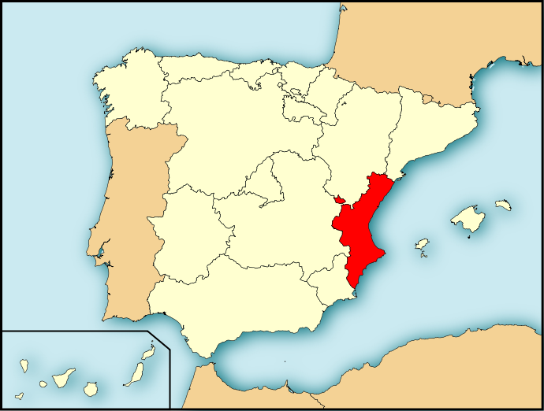

Hiking in the Valencian Community is a very popular activity and offers many options for all tastes. There are routes that cross mountains, forests, wetlands and trails by the sea, which makes the Valencian Community a destination full of landscapes to explore with a backpack and boots. Some of the most popular routes include the Route of the Hanging Bridges of Chulilla, the Route of the Water in Chelva and the green way between Oropesa del Mar and Benicasim. In addition, there are routes for all skill levels, from simple paths such as those that run through the Albufera de València Natural Park to more challenging routes such as the Barranc del Infern in the Vall de Laguar.
